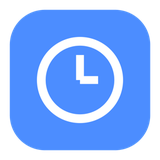
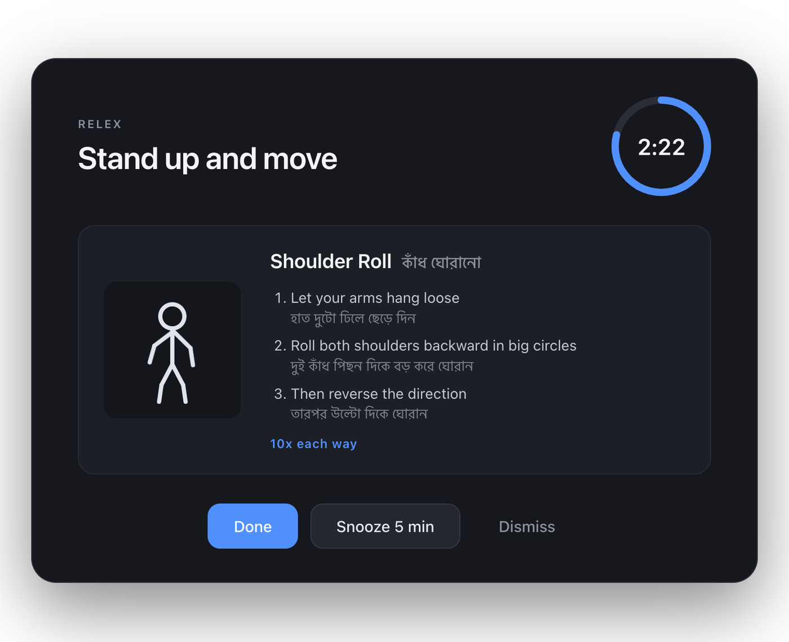

A menu-bar reminder to stand up and move.
ঘণ্টার পর ঘণ্টা বসে থাকা বন্ধ করুন — প্রতি ৩০ মিনিটে উঠে দাঁড়ানোর মনে করিয়ে দেবে।
Download for macOS
A live countdown to your next break. Pause, skip, or take one early.
মেনু বারে countdown দেখায়। থামানো, বাদ দেওয়া বা এখনই বিরতি নেওয়া যায়।
Neck, shoulders, back, wrists, eyes, legs — each with an animated figure and steps.
ঘাড়, কাঁধ, পিঠ, কব্জি, চোখ, পা — প্রতিটির অ্যানিমেশন ও ধাপ সহ।
Every instruction appears in both languages.
প্রতিটি নির্দেশনা দুই ভাষাতেই দেখা যায়।
The popup appears over other apps but never takes keyboard focus, so a keystroke never lands in the wrong place.
পপআপ উপরে আসে, কিন্তু কীবোর্ড কেড়ে নেয় না — টাইপ করা অক্ষর হারায় না।
Only remind you between the hours you choose. Overnight shifts work too.
শুধু আপনার বেছে নেওয়া সময়েই মনে করাবে। রাতের শিফটও চলবে।
Closing the lid pauses the timer and gives back the time that was left, rather than restarting it.
ল্যাপটপ বন্ধ করলে টাইমার থামে, খুললে বাকি সময় থেকেই চলে।
.dmg and open it.
ফাইলটি ডাউনলোড করে খুলুন।
Why the right-click?
RELEX is signed for personal use rather than with a paid Apple Developer
certificate, so macOS asks for confirmation the first time. Only the first
launch needs it. If macOS says the app is damaged, run
xattr -dr com.apple.quarantine /Applications/RELEX.app.
ডান-ক্লিক কেন? অ্যাপটি Apple-এর সার্টিফিকেট ছাড়া তৈরি, তাই প্রথমবার macOS
অনুমতি চায়। শুধু প্রথমবারই লাগবে।